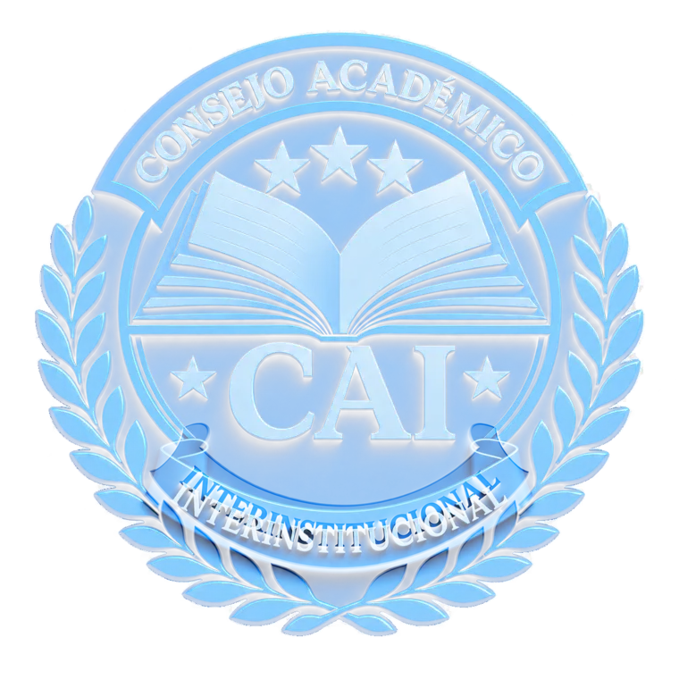

Coordinación interinstitucional
Fortalecer mecanismos comunes de articulación para reducir la dispersión de esfuerzos académicos.

Instituto Nacional de Estudios Estratégicos en Seguridad · INEES
Articulación académica, información estratégica y cooperación para fortalecer progresivamente la formación y la profesionalización en el Sistema Nacional de Seguridad.
Articulación institucional
El Consejo Académico Interinstitucional es la instancia técnica de coordinación académica del Sistema Nacional de Seguridad, conforme al artículo 49 del Reglamento de la Ley Marco del Sistema Nacional de Seguridad. Bajo la tutela operativa del INEES, articula esfuerzos y facilita la interacción institucional en materia de formación, capacitación y profesionalización.
El Plan Estratégico 2026–2028 ordena y da continuidad a esos esfuerzos mediante una ruta gradual para integrar información, identificar capacidades, coordinar acciones comunes y generar insumos técnicos. Las mesas actúan con carácter técnico, consultivo y propositivo, sin sustituir las competencias legales de las instituciones participantes.
Diagnóstico estratégico
El Plan responde a condiciones concretas que limitan la integración académica del Sistema.
Fortalecer mecanismos comunes de articulación para reducir la dispersión de esfuerzos académicos.
Organizar datos sobre estructuras, capacidades, necesidades y oferta formativa de las instituciones.
Aprovechar la cooperación, el intercambio y las capacidades existentes dentro y fuera del Sistema.
Establecer instrumentos simples que permitan verificar avances, resultados y oportunidades de mejora.
Dirección estratégica
Consolidar al CAI como instancia técnica de interacción académica mediante articulación interinstitucional, información estratégica, fortalecimiento de capacidades y criterios comunes de desarrollo curricular, calidad académica y profesionalización.
Fortalecer la coordinación interinstitucional mediante mecanismos formales de articulación y seguimiento.
Desarrollar alianzas estratégicas para fortalecer capacidades.
Implementar un observatorio básico de información académica.
Promover cooperación, becas, movilidad e intercambio.
Impulsar metodologías de seguimiento e intercambio institucional.
Proponer criterios comunes de competencias, perfiles de egreso, calidad, certificación y equivalencias.
Generar insumos académicos para apoyar a la CAP, sin sustituir sus competencias.
Participación interinstitucional
Implementación gradual
La ejecución avanza por fases para asegurar viabilidad, continuidad y resultados verificables.
Levantamiento de información, diagnóstico, organigrama, diseño del observatorio y organización básica.
Uso de información para coordinación, cooperación, desarrollo curricular y generación de evidencia.
Evaluación, actualización del diagnóstico y definición de la continuidad ante la transición administrativa.
Plan Estratégico 2026–2028
Unidades técnicas interinstitucionales que ejecutan acciones, generan información y elaboran productos para validación del Consejo Académico Interinstitucional.
Levanta información, mapea unidades de formación, organiza datos y elabora reportes.
Diagnóstico consolidado, base de datos y organigrama funcional del sistema.
Identifica oportunidades de cooperación, becas, movilidad e intercambio.
Ruta de cooperación, cartera de oportunidades y registro de apoyos.
Monitorea avances, consolida indicadores y propone ajustes.
Tablero básico de resultados, informe anual y propuesta de mejora.
Concerta contactos y gestiona las relaciones públicas del CAI.
Acuerdos, convenios y presencia institucional coordinada.
Identifica competencias comunes, perfiles de egreso y criterios de calidad, certificación y equivalencias, respetando las especialidades institucionales.
Mapa de competencias, análisis de perfiles, criterios mínimos de calidad, ruta de certificación, equivalencias y matriz de brechas curriculares.
Articula los aportes académicos del CAI con la CAP y genera insumos sobre la dimensión formativa de la Carrera Profesional.
Documento técnico para la CAP, matriz comparada de sistemas de carrera, brechas académicas y recomendaciones de articulación.
Seguimiento estratégico
La medición combina coordinación, información estratégica, cooperación, desarrollo curricular y articulación con la Carrera Profesional.
Diagnóstico actualizado, base del observatorio y organigrama funcional de las unidades de formación.
Acciones, becas, movilidad, intercambios, convenios y apoyos debidamente registrados.
Reuniones con acuerdos, tablero básico de resultados e informe estratégico anual.
Competencias, perfiles de egreso, criterios de calidad, certificación, equivalencias y brechas curriculares.
Insumos académicos trasladados por los canales institucionales para consideración de la CAP.
Evaluación anual, actualización de instrumentos y propuesta de continuidad para el siguiente período.
Información institucional
Este espacio reunirá planes, instrumentos de trabajo, productos académicos e informes autorizados para consulta pública.
Los documentos se incorporarán después de su revisión y autorización institucional.